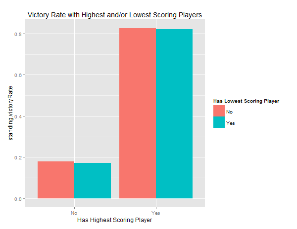
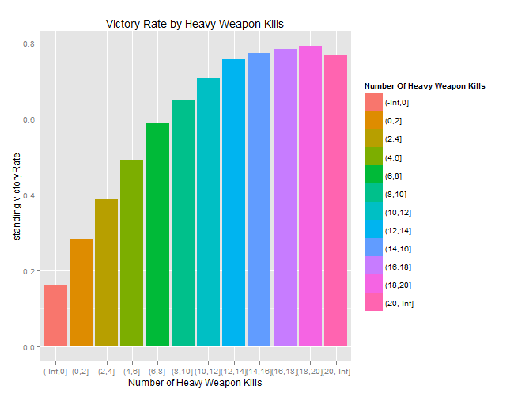

The Crucbile is no place for mercy
Overview
In many video games, the opportunity for player to receive loot is tied to their performance. Victory in story missions or against other players in competitive multiplayer is directly tied to getting bigger and better weapons and armor. Bungie’s Destiny hasn’t always been a shining example of this (in fact it is often the antithesis of this) but after the most recent update with the release of House of Wolves, players are now more rewarded more frequently if they win multiplayer matches. The point of this project is to examine trends within Destiny’s competitive multiplayer games. The idea is that if I can find a model that accurately predicts who wins and who loses, then we can find tangible things players can do in order to boost their chances of winning, and therefore boost their chances for better loot. For this project, I created two dataset by doing a random walk through some post game data (also referred to as Post Game Carnage Reports). Bungie stores all of this data online and it is publicly accessible through their website, and through a REST API. The first dataset was created about a week before the release of House of Wolves, and the other dataset was created about a week after. The reason for doing the second dataset after the release of House of Wolves was to show that the trends that I discuss in this project do not only pertain to pre-House of Wolves Destiny. After any major update, there is a large amount of flux happening in the community. New weapons, armor, maps, and level cap change the game. I think using data from this time-frame strengthens the findings of this project. These findings do not just hold true to the pre-House of Wolves games, but hold true right now. The datasets were then combined to create one large rectangular matrix with over 150,000 rows and 60 columns. This boils down to only being about 11,000 games worth of information. When considering the number of games of Destiny that have been played over time, this number is very small, but I do feel it is large and diverse enough to be an accurate sample of the data. I used a mixture of R and Python to complete this project. I used Python with pandas to get the data and to format the dataset but used R for the actual modeling and then cleaned off the predictions in Python. All graphs in this post were also created in R.
Building the Dataset
Bungie has a REST API (that they call the Destiny Platform) that can be used to get Post Game Carnage Reports. A user makes a request, and the server sends them back a nice JSON file to parse. I had been working on a small Python library to handle making requests to the Destiny Platform and I had just enough of it developed to be able to use on this project. It handles requesting data and checking for errors that occur during that process. I then built another Python script that utilizes that library to do a “random walk” through Post Game Carnage Reports. This random walk does the following: given a player’s name get their most recent game, then pick a player from that game and get their most recent game that isn’t the same as one that we already have, and then pick another player from that game and so on. I was having a problem where this fetch process would die every so often due to errors between my interface and the Destiny Platform (the source of which I still haven’t fully figured out). In order to deal with this, I created a list of starting players, and if an error occurs, the random walk jumps to the next player in the list and starts from there. This list of “anchors” includes myself and 8 other people that I know play frequently. That way, I know that their most recent game is actually recent. This dataset is biased in that it only looks at one gametype – Control. That means that the findings from this project apply to Control, but not necessarily to all other gametypes. The reasons for picking Control are:
- It seems to be more popular (or it is at the very least my favorite)
- It’s team based
- There are objectives other than straight kill the other player
Looking at the Data
After building the dataset, I pulled it into R to take a quick look at some trends in the data. There were a lot of them, but I am only including the ones that I found to be the most interesting. One of the first trends I went to look at was player weapon usage. From personal experience, it often feels as though the same weapons are used all the time, so I wanted to see if that was true. It turns out, that the top 15 weapons account for just over 50% of all usage. While creating the dataset, I looked at the two weapons that a player had the most kills with that game. Some of the top 15 most used weapons also appear in the top 15 second most used weapons. For example, Felwinter's Lie for some people is their most used weapon at the end of a game, but is other player’s second most used weapon at the end of a game.
I then wanted to see how weapon usage is connected to victory. As you can see in the plot below, while these weapons are used very often, they don’t necessarily increase a player’s chance for victory. All of the weapons have a victory rate of about 50%. The Stranger's Rifle is interesting to see here because it is a lower-tiered weapon than everything else. This indicates that the tier of the weapon (i.e. Common, Rare, Legendary, Exotic) does not have an impact on a player's chances of winning.
Another interesting set of factors to look at is map. It is often argued that certain teams on certain maps always win. This leads to people sometimes leaving a match because they believe that the odds are stacked against them.
All things being equal, we would expect the victory rate for each team on any give map to be about 50%. According to this plot, that is not the case. Firebase Delphi has the most significant gap where Alpha Team wins 54% games versus Bravo Team who only wins 42% of their games. Note that the victory rates do not add up to 100% on any given map. That’s because the dataset isn’t evenly split into half Alpha team and half Bravo team. When a player quits a game they are still included in the set. It's also neat to look at the frequency that maps are played on. This really has no impact on the conclusions I reached about victory on certain maps but it does show that some of the more heavily played maps actually have some of the worst bias. Shores of Time is one of the more frequently played maps, and it is also one of the more heavily biased maps.
We can also look at a player’s Combat Rating. Combat Rating is a metric that Bungie created to effectively rank player’s along a scale.
Combat Rating appears to be directly tied to a player’s victory rate with the only anomaly being when a player has a combat rating of 0. Since Bungie keeps track of the combat rating in their system, I am assuming that it is a time dependent variable. Another interesting project could be to try and reverse engineer the combat rating of a player over time. The overall point here is that a player’s combat rating is a very good indicator of whether or not that player will win. It is also a team-independent variable which makes it very interesting to consider. When predicting victory, should we compare teams based on their average combat rating, or should we compare only the highest combat rating in each team?
Predicting Victory
The first step I took in predicting victory was to do a quick random forest on the data and see what happened. Doing this gave me a root mean square error of over 50%. This is unsurprising since this model attempted to predict a player’s victory based on their own stats and therefore players on the same team were being given different victory rates. The next step was then to melt the dataset down into a team based dataset instead of a player based dataset. Each game would have two vectors associated with it – one for Alpha team and one for Bravo team. The features of each team were built off of the data of the player’s of each team. After rebuilding the dataset in this fashion, I then split the data into training and test sets and ran 10-fold repeated cross validation on them. This gave me the probabilities that a particular team would be given a 1 for their victory variable. A value of 1 actually corresponds to defeat (this is how it is stored in the Destiny Platform) I then took this output and ran it through a Python script that looked at each game and compared these probabilities. Within each game, the winning team is the team with the smaller probability, and the loser therefore the one with the higher probability. In the event that these probabilities are the same, one team is randomly chosen to be the victor. This method gave me a root mean square error of 16%. This also only used a handful of features. I was also careful to avoid features that are dead giveaways for victory (like the actual team score).
Securing Victory
So what can players do to secure victory?
MVP
For starters, always shoot to be the best player in the game. Seem simple and intuitive, but teams with the highest scoring player on them win over 80% of the time. This value deviates only slightly even if the team with the highest scoring player also has the lowest scoring player.
Play With Friends
Being on a team with friends also increases chances for winning. The less fireteams on a team, thereby the more friends you being into a match with you, the more likely you are to win.
Send them out with a bang
This one goes two ways. Being able to effectively use your heavy weapons increases the likelihood of victory, but also preventing the other team from being able to use theirs ends in their defeat. If you can't use your own heavy, you would be just as well off trying to steal theirs.
